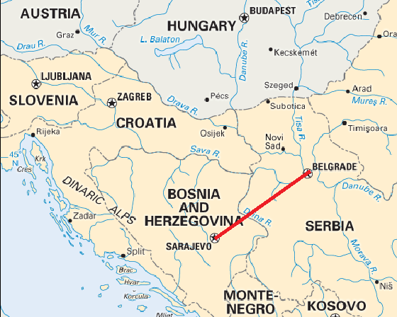

From Belgrade to Sarajevo: An Epic Road Trip
AUGUST 11, 2014

Wow, I can’t believe it’s been almost two months since my last post. Summers in Chicago are short which means I have to make the most of it! Over the past few months, my weekends have been occupied with weddings, music fests, and visits from some of my favorite people. As summer comes to a close (I can’t even think about it!) my posts will become more frequent, I promise! Without further ado…
Mostar, Bosnia and Herzegovina: Beauty Among the Ruins
June 17,2014
After leaving Sarajevo, the capital of Bosnia and Herzegovina, (you’ll read about sweet Sarajevo in a future post), I couldn’t believe the trip was halfway over. After several nights of bonding over epic sunset views, strong rakija and amazing beef cevapi with the #YOGYPSY crew, I didn’t even want to think about the trip coming to an end.